Customer Segmentation using K-Means Clustering
Data Source: Kaggle(Customer Loyality dataset)
Softwares: python- Numpy, Pandas, Scikitlearn
Outline
1. Understanding the objective
2. Requirements
3.Importing the neccessary libraries & data set
4. Data Cleaning and Exploring data Analysis
5.Model Training
6.Data Visualization
Understanding the Objective
K means clustering is an unsupervised machine learning algorithm that separates a given data into a specified number of clustersin order to uncover hidden patterns in the data. This project attempts to divide the Mall customers into groups of similar characterisitics.
In this case, based on their spending score and Annual Income. In this case, it is a behavioural market segmentation and this is specifically useful in identifying which customer is more valuable to the business.
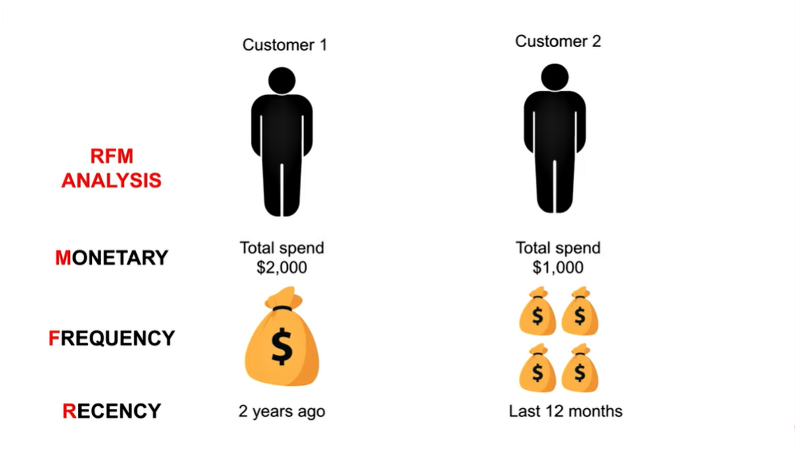
Uses of Clustering
- Marketing: To help determiine who gets discounts, offers or promotion codes based on the groups.
- Document Analysis: To group texts and documents according to similarity
- Increase customer retention and decrease churn
- Determine appropriate product pricing.
- Real Estate: To understand and divide various property locations based on value and importance.
- How many categories of customers do we have? The data includes the following features:
2. Requirements
Build a database to segment customers based on their Annual income and spending score.1. Customer ID
2. Customer Gender
3. Customer Age
4. Annual Income of the customer (in Thousand Dollars)
5. Spending score (based on customer behaviour and spending nature)
Importing the neccessary libraries and data set
The cleaned dataset was imported in Excel csv format into the Google colaboratory notebook 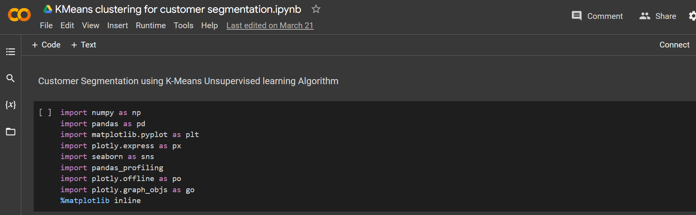Data Cleaning and Exploring data Analysis
A detailed Exploratory data analysis was done on the data using the Pandas profile Report. Overview 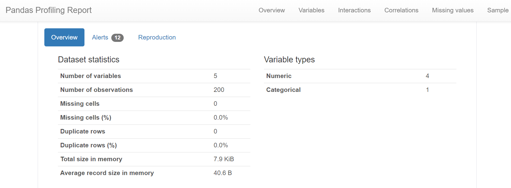 variables 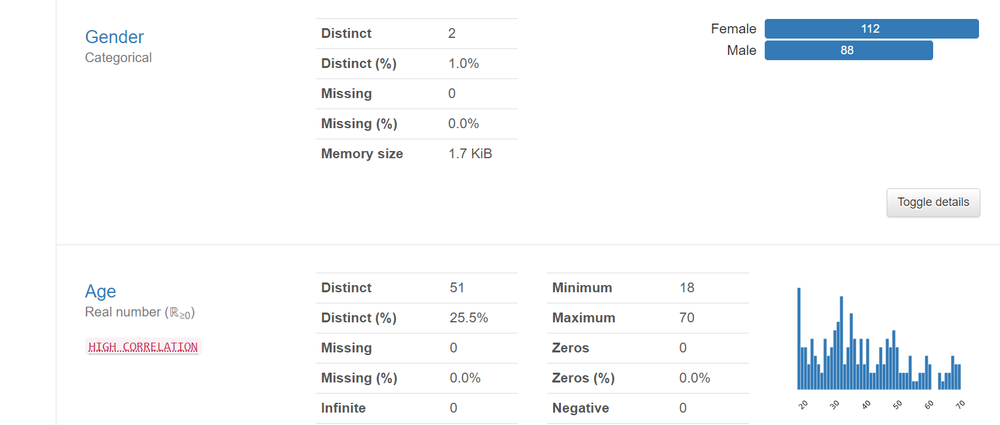 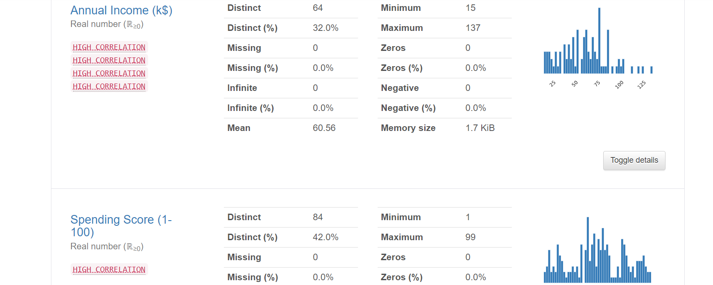 Correlation
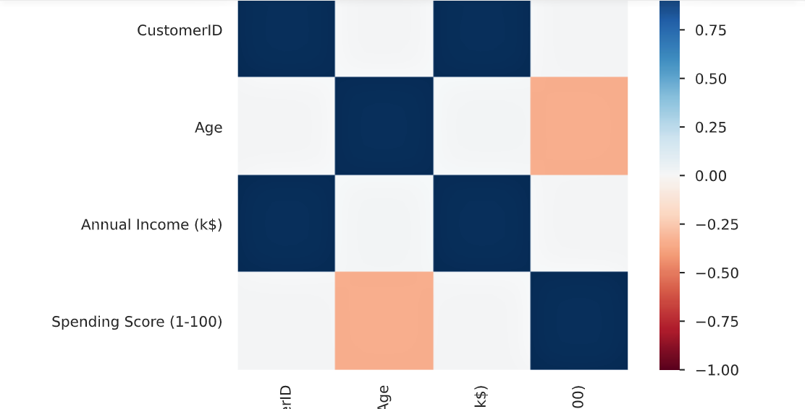
Missing values:
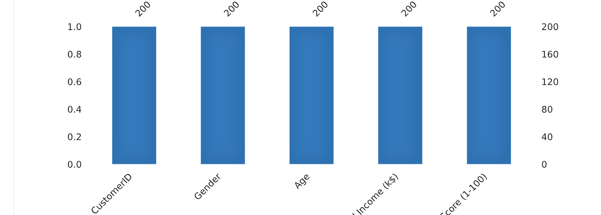
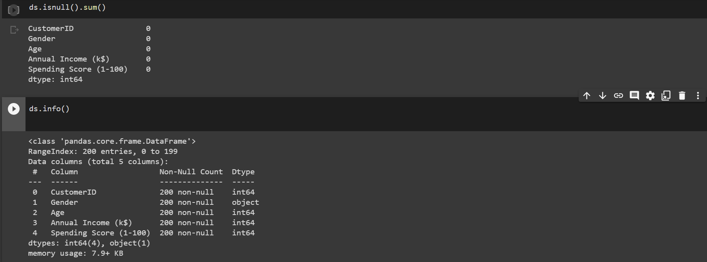
There are no missing values in the dataset
Plot of Age with Total percentage of Income
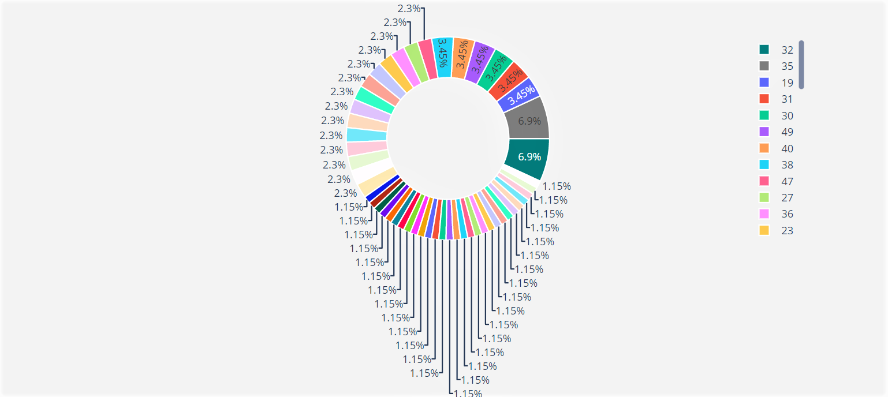
The plot shows that the age group on the legend as we scroll, each contributes the displayed percentage of the Total Income on the doughnut chart
Specifying our data for x in terms of Annual Income and Spending score
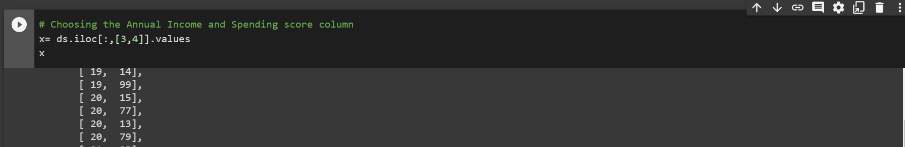
Model Training
Choosing the number of clusters using the WCSS- Within clusters sum of squares 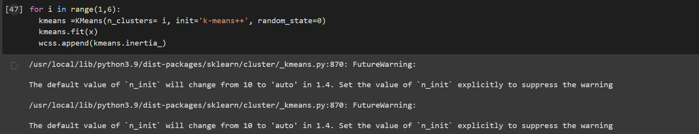
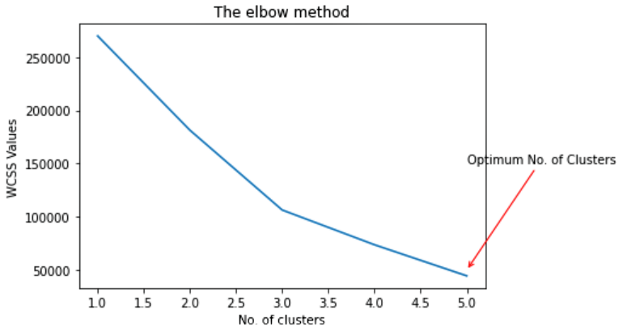
Training the K-Means Clustering Model
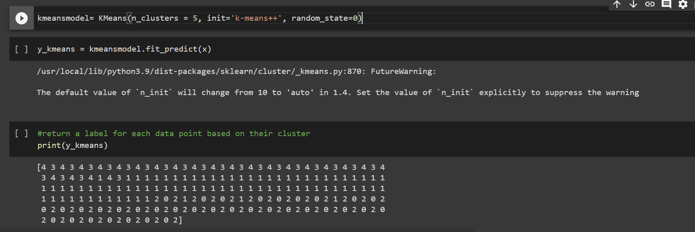
Data Visualization
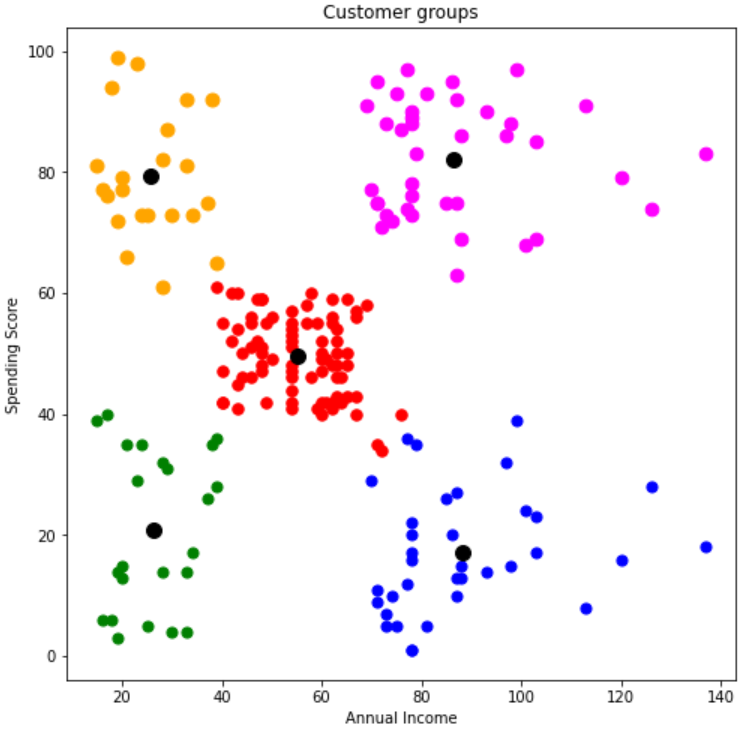